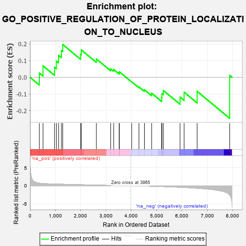
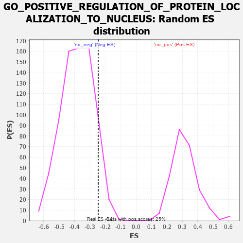

| | | Dataset | 7d |
| Phenotype | NoPhenotypeAvailable |
| Upregulated in class | na_neg |
| GeneSet | GO_POSITIVE_REGULATION_OF_PROTEIN_LOCALIZATION_TO_NUCLEUS |
| Enrichment Score (ES) | -0.24581955 |
| Normalized Enrichment Score (NES) | -0.6458377 |
| Nominal p-value | 0.90641713 |
| FDR q-value | 1.0 |
| FWER p-Value | 1.0 |
Table: GSEA Results Summary

Fig 1: Enrichment plot: GO_POSITIVE_REGULATION_OF_PROTEIN_LOCALIZATION_TO_NUCLEUS
Profile of the Running ES Score & Positions of GeneSet Members on the Rank Ordered List
| PROBE | GENE SYMBOL | GENE_TITLE | RANK IN GENE LIST | RANK METRIC SCORE | RUNNING ES | CORE ENRICHMENT | | 1 | LARP7 | | | 369 | 0.731 | 0.0253 | Yes |
| 2 | NMD3 | | | 513 | 0.625 | 0.0686 | Yes |
| 3 | ZPR1 | | | 967 | 0.491 | 0.0597 | Yes |
| 4 | AKT1 | | | 1040 | 0.476 | 0.0972 | Yes |
| 5 | SRC | | | 1128 | 0.459 | 0.1313 | Yes |
| 6 | KAT7 | | | 1240 | 0.440 | 0.1605 | Yes |
| 7 | DKC1 | | | 1292 | 0.431 | 0.1963 | Yes |
| 8 | MCRS1 | | | 1996 | 0.305 | 0.1378 | No |
| 9 | DMAP1 | | | 2025 | 0.301 | 0.1638 | No |
| 10 | BAG3 | | | 2620 | 0.209 | 0.1096 | No |
| 11 | RBM22 | | | 3182 | 0.125 | 0.0512 | No |
| 12 | SMAD3 | | | 3303 | 0.105 | 0.0464 | No |
| 13 | UBR5 | | | 3518 | 0.074 | 0.0268 | No |
| 14 | HDAC3 | | | 3528 | 0.072 | 0.0327 | No |
| 15 | PARP1 | | | 4014 | -0.010 | -0.0273 | No |
| 16 | RAN | | | 4299 | -0.059 | -0.0572 | No |
| 17 | PINX1 | | | 4515 | -0.097 | -0.0748 | No |
| 18 | TERT | | | 4801 | -0.157 | -0.0953 | No |
| 19 | SMO | | | 5195 | -0.247 | -0.1206 | No |
| 20 | IPO5 | | | 5207 | -0.248 | -0.0976 | No |
| 21 | CDK1 | | | 5264 | -0.262 | -0.0790 | No |
| 22 | STK11 | | | 5922 | -0.443 | -0.1182 | No |
| 23 | PLK1 | | | 6082 | -0.500 | -0.0892 | No |
| 24 | TPR | | | 6597 | -0.709 | -0.0844 | No |
| 25 | FYN | | | 7881 | -2.622 | 0.0113 | No |
Table: GSEA details [plain text format]

Fig 2: GO_POSITIVE_REGULATION_OF_PROTEIN_LOCALIZATION_TO_NUCLEUS: Random ES distribution
Gene set null distribution of ES for GO_POSITIVE_REGULATION_OF_PROTEIN_LOCALIZATION_TO_NUCLEUS